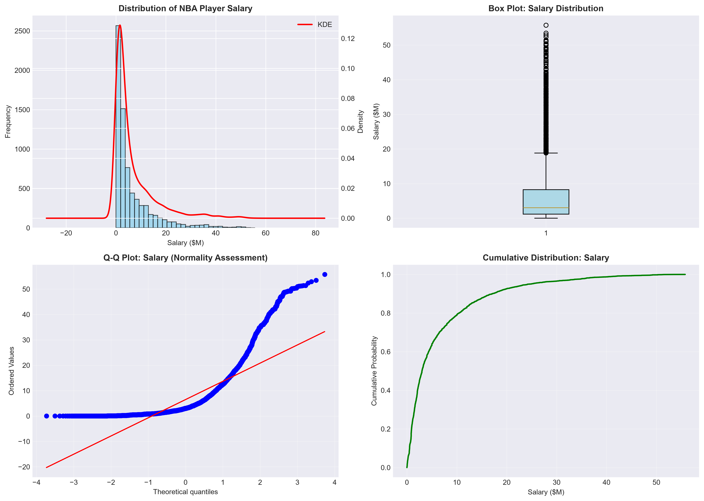
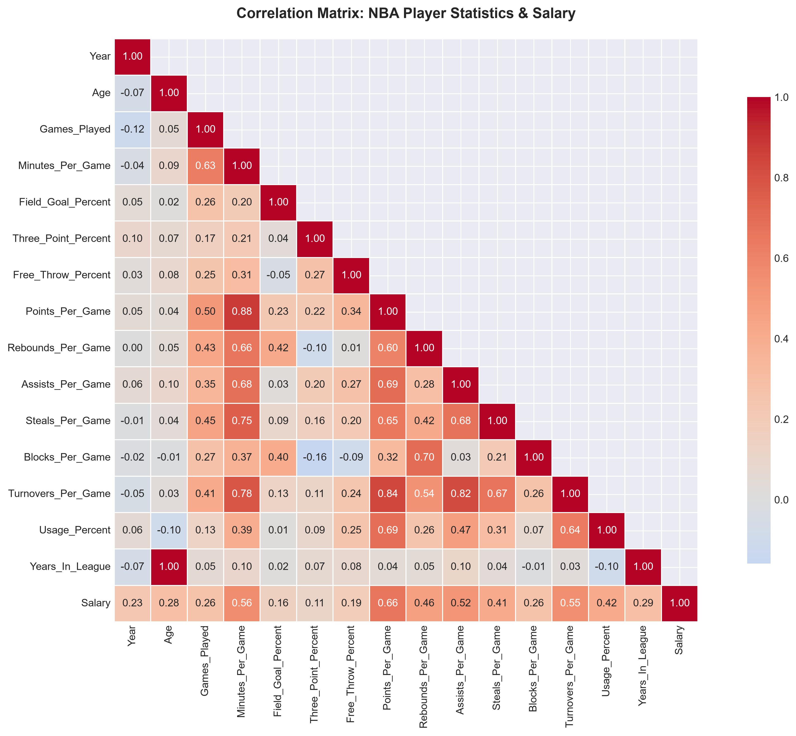
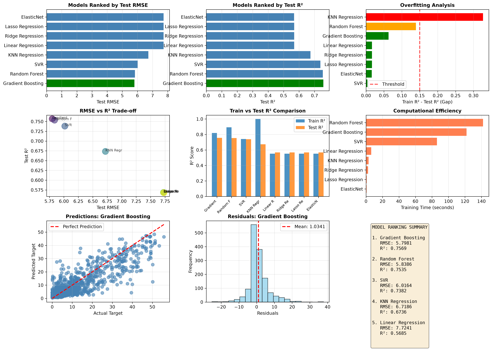
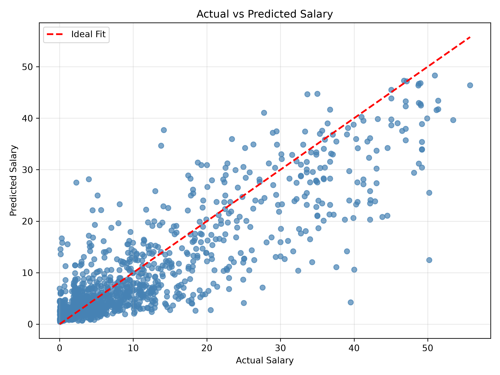
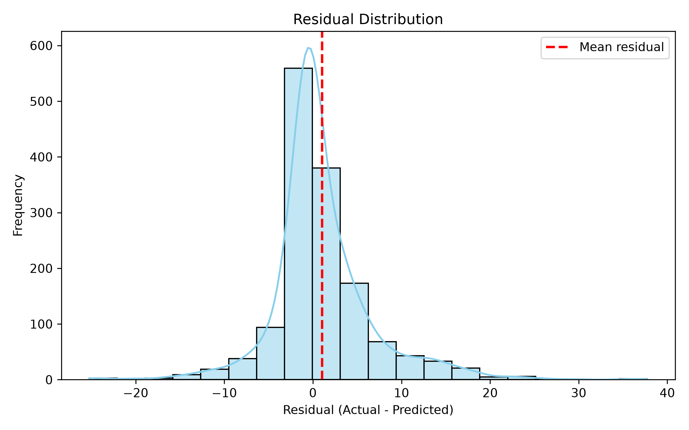

What Is an NBA Player Really Worth?
An end-to-end CRISP-DM case study in predicting contracts, discovering contract lag, and building a salary-cap-aware fair-value estimator.
Shai Gilgeous-Alexander provided the perfect stress test. Feed an MVP season into a conventional salary model and it can return roughly $30 million. That looks reasonable beside his recorded 2024–25 salary of $35.86 million—until we ask a better question.
Are we predicting what a player happens to earn, or what that player would be worth in a new negotiation?
Those are different targets. Existing contracts remember when they were signed. Rookie scales, early extensions, maximum-salary rules, service time, and a rising league salary cap can keep an elite player's paycheck below present market value. This project began as an NBA salary predictor. It became more honest when it separated a historical contract benchmark from a transparent estimate of fair value.
The situation: 7,296 real player-seasons
The analysis uses the Kaggle NBA Player Stats and Salaries 2010–2025 dataset. After resolving duplicate rows for traded players, the working table contains 7,296 unique player-seasons. The pipeline maps compact fields to readable basketball statistics and converts salary from dollars to millions.
Salary is strongly right-skewed. The median is about $3.01 million and the mean is $6.49 million. A small superstar group creates a long upper tail, meaning a model can perform well for typical players while struggling on the contracts people discuss most.

CRISP-DM kept the question honest
The seven executable project chunks implement the six CRISP-DM phases: business understanding, data understanding, preparation, modeling, evaluation, and deployment. This structure matters because it makes assumptions visible and gives unexpected results a place to be investigated.
Understanding and preparing the data
Missing shooting percentages are median-imputed, while legitimate salary outliers remain because star contracts are real observations rather than data errors. The project creates basketball-informed predictors for scoring efficiency, playmaking balance, turnover pressure, prime age, shooting accuracy, and defensive contribution.
The split is chronological: 5,836 earlier player-seasons train the model and 1,460 newer seasons form the holdout. This is harder than a random split because league salaries rise over time, but it better resembles real deployment.

Comparing models
Eight regression families compete under the same split: Linear Regression, Ridge, Lasso, ElasticNet, Support Vector Regression, K-Nearest Neighbors, Random Forest, and Gradient Boosting. Feature selection produces a compact set of 15 inputs.
Gradient Boosting wins on the chronological holdout using 100 estimators, a 0.05 learning rate, depth 5, and 0.8 subsampling.

The complication: prediction is not valuation
For SGA's MVP-level 2025 season, the model produces a historical contract benchmark near $30 million. That result is not absurd: his recorded salary was $35.86 million. It estimates the kind of salary found in the training data. The problem is that the contract was negotiated before his MVP peak.
| Output | What it means | SGA example |
|---|---|---|
| Observed salary | What the existing deal paid | $35.86M |
| ML benchmark | Expected historical contract salary | about $30.21M |
| Fair first-year value | Cap-aware value at a 2028 start | $65.49M |
| Four-year illustration | Value with 8% annual raises | $293.41M |
The gap is contract lag: performance can change every game, while compensation changes only when contract rules allow it. A statistically reasonable prediction of an old contract can therefore be a poor answer to a new-negotiation question.
The resolution: report both answers
Historical contract benchmark comes from the trained Gradient Boosting model. Fair annual value comes from an explicit salary-cap and market framework. Neither is disguised as the other.
The user supplies a stats season and contract start year because they serve different purposes. The stats season locates the performance in time. The contract year determines the relevant salary cap and the player's service time when the deal begins.
The framework ranks performance against 7,296 historical seasons. Points receive the largest weight, followed by assists, rebounds, minutes, steals, and blocks. Service time supplies a simplified 25%, 30%, or 35% maximum-salary tier. MVP, All-NBA, and All-Star selections add visible adjustments.
For the demonstration, 2025 performance and a 2028 contract start increase SGA from six to nine years of service. MVP and All-NBA recognition support the 35% tier. Using the project's projected cap produces approximately $65.49 million in year one and $293.41 million over four years with illustrative 8% raises.
Diagnostics and limitations
The final model explains roughly 76% of salary variation in the newest holdout seasons. Its median absolute error is about $1.96 million, but the 95th-percentile absolute error reaches $13.67 million. Residual normality tests reject a normal distribution. In plain language, typical benchmarks are useful, but extreme contracts remain substantially less certain.


The fair-value result is a decision-support estimate, not a complete NBA Collective Bargaining Agreement engine. It simplifies award lookback windows, Bird rights, options, trade bonuses, extension timing, and team circumstances. Future salary caps are explicitly labeled as projections. Fair value is not an observed label, so its performance score is a transparent heuristic rather than ground truth.
The lesson
A model can be statistically accurate and still answer the wrong business question.
The most important improvement was not another hyperparameter search. It was redefining the product so historical salary and current value could no longer be confused. CRISP-DM exposed the mismatch, while transparent assumptions made the final result easier to challenge, explain, and improve.
Run the project with .\run.ps1, then open http://127.0.0.1:8006. The script installs dependencies, executes all seven analytical chunks, writes the model artifacts, and launches the fair-value interface.